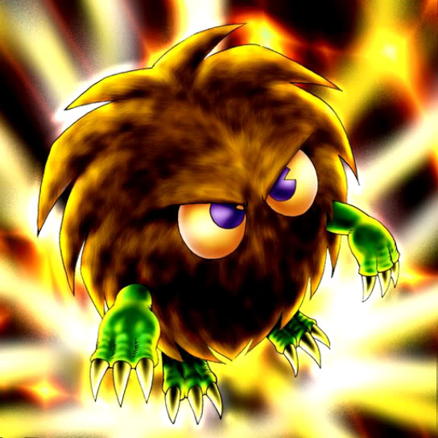

Kuriboh

Description: "Whenever damage is inflicted to LP in battle, the damage amount is reduced to 0."
STATS
ATK: 300
DEF: 200DECK COST
Deck Cost per Card: 10EFFECT NOT IMPLEMENTED
Fusion List (7 Possible Fusions)
- Kuriboh + Baby Dragon = Koumori Dragon
- Kuriboh + Dark Plant = Rose Spectre of Dunn
- Kuriboh + Fungi of the Musk = Darkworld Thorns
- Kuriboh + Mushroom Man = Rose Spectre of Dunn
- Kuriboh + Skull Servant = Shadow Specter
- Kuriboh + Winged Dragon, Guardian of the Fortress #1 = Koumori Dragon
- Kuriboh + Yamatano Dragon Scroll = Koumori Dragon